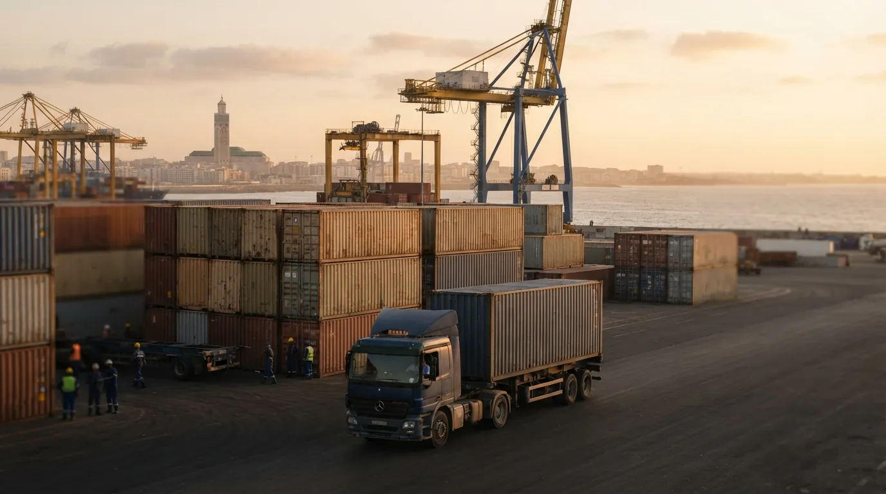

In short: to sell online in Morocco, a foreign brand needs a local importer of record, stock held in Morocco and a logistics partner that can deliver nationwide and collect cash on delivery (COD). Shipping each order from Europe or Asia is slow, expensive and incompatible with the way Moroccan consumers pay.
Why local stock beats cross-border shipping
- Cash on delivery dominates. Many Moroccan shoppers pay in cash when the parcel arrives. Cross-border parcels cannot offer this.
- Speed reduces refusals. With COD, a customer can refuse the parcel at no cost. The longer the wait, the more refusals.
- Every small parcel clears customs. A bulk import cleared once costs far less per unit.
- Local marketplaces such as Jumia expect short handling times that cannot be met from abroad.
The four building blocks
- Importer of record. Goods are imported by a Moroccan entity with a company identifier (ICE): your subsidiary, a distributor or an importer partner. It clears customs and invoices locally.
- Freight forwarder and customs broker. They organise transport, file the declaration and handle clearance. Some categories (food, cosmetics, electrical goods, medical devices) require prior authorisations or conformity checks: confirm this before the first order.
- Warehouse with a WMS. Receiving, quality check by SKU, storage, pick and pack.
- Delivery and cash collection. Nationwide delivery, COD collection, reconciliation and remittance to the local entity.
Adapting your products to the market
- Labelling: check mandatory Arabic and French mentions for your product category.
- Barcodes: one GS1 EAN per SKU simplifies receiving, picking and marketplace listings.
- Pack sizes and prices: average baskets are lower than in Europe; trial sizes and bundles often sell better.
- Returns: plan to restock locally. Sending a refused item back to Europe costs more than the item.
Typical launch timeline
| Step | Indicative timing |
|---|---|
| Importer of record, product authorisations | First, depending on category |
| Logistics quote, store or marketplace integration | In parallel |
| Transport (sea, or road and ferry from Europe) and customs clearance | A few days to a few weeks |
| Receiving, quality check, put-away | On arrival |
| First orders, review of refusals and lead times | First weeks |
What Tecxodus handles
Tecxodus takes over when goods reach Casablanca: inbound appointment with your forwarder, receiving and checks, storage (sample rate MAD 3 per pallet per day), integration of your Shopify, WooCommerce or YouCan store or your Jumia account, pick and pack (MAD 0.50 per order line), delivery anywhere in Morocco (MAD 30 per delivery) and cash collection. Delivery is done by the Tecxodus team in Casablanca, Rabat, Marrakech, Tangier and the other major cities, and by partner carriers (Aramex, Amana, CTM, Ozon, Sendit and Cathedis) elsewhere. International groups including Mars, L’Oréal, LG, Samsung, Oraimo and Dell have entrusted logistics operations to Tecxodus.
See the full offer: e-commerce fulfillment in Morocco.
Frequently asked questions
Can a foreign brand sell directly to Moroccan consumers?
Yes, through a local importer of record (subsidiary or partner), stock held in Morocco and a logistics partner that delivers and collects cash on delivery.
Can I ship each order from Europe?
It is possible but slow and expensive, every parcel clears customs, and cash on delivery is not available. Local stock is the standard approach.
Does Tecxodus clear customs?
Customs clearance is handled by your freight forwarder and customs broker. Tecxodus handles receiving in Casablanca, storage, fulfillment, delivery, cash collection and returns.